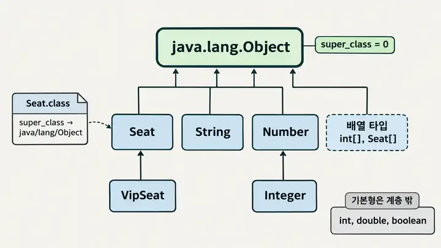
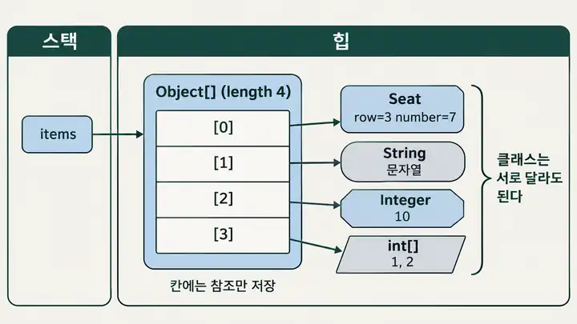
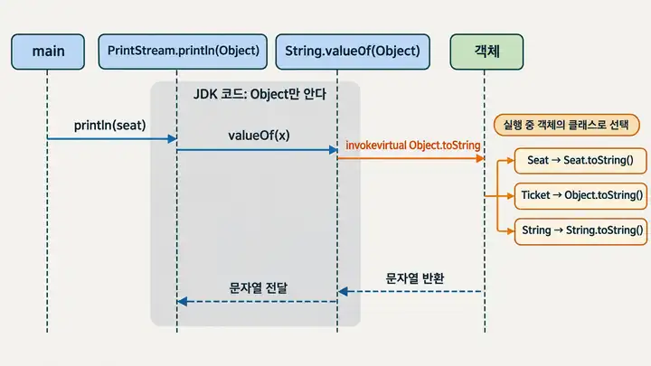
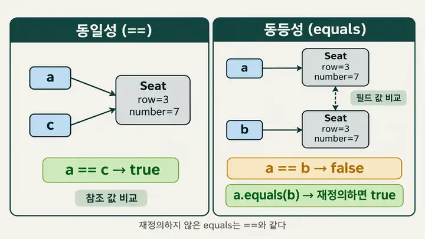

자바 중급 1편 / 01회
Object 클래스
모든 클래스의 부모인 Object를 클래스 파일과 JVM의 메서드 선택 수준에서 살피고, toString과 equals를 재정의해야 하는 이유를 동일성과 동등성의 구분으로 설명한다.
오늘 끝나면 할 수 있는 것
extends를 쓰지 않은 클래스의javap -v출력에서super_class항목과 생성자의invokespecial을 찾아, 모든 클래스가Object를 상속한다는 규칙(JLS 8.1.4)을 직접 확인할 수 있다.Object변수와Object[]배열에 무엇을 담을 수 있는지, 꺼내 쓸 때checkcast와ArrayStoreException이 각각 무엇을 검사하는지 컴파일 시점과 실행 시점으로 나누어 설명할 수 있다.System.out.println(객체)가toString()에 이르는 호출 경로를 추적하고, 기본 출력클래스이름@16진수의 각 부분이 어디서 오는지 명세가 정한 것과 HotSpot 구현을 구분해 말할 수 있다.- JDK의
println(Object)가 나중에 작성된 클래스의toString()을 실행할 수 있는 이유를 컴파일 시점 의존성과 실행 시점 메서드 선택(JVMS 5.4.6)으로 설명하고, 이를 OCP와 연결할 수 있다. - 동일성과 동등성을 구분하고, 규약 다섯 가지를 지키는
equals()를 작성하며, 매개변수 타입을 잘못 써서 오버로딩이 된 버그와hashCode()를 빠뜨린 버그의 원인을 설명할 수 있다.
핵심 강의 → 핵심 요약 → 실무 재판단 → 적용 연습 → 이해 확인
01 핵심 강의
이 강의의 차례 · 소제목 14개
- 기본편이 남긴 질문: 서로 무관한 객체들의 공통점
- 이 권의 실습 환경: JDK 21과 확인 도구
- java.lang 패키지: import 없이 쓰는 이름들
- Object 클래스: 모든 클래스의 부모
- Object 다형성: 무엇이든 담지만, 아는 것은 Object의 메서드뿐
- Object 배열: 참조를 담는 칸들, 그리고 공변성의 대가
- toString(): 객체의 문자열 표현
- 한 층 아래: @ 뒤의 16진수는 어디서 오는가
- Object와 OCP: 아직 없는 클래스의 메서드를 부르는 코드
- equals() ① 동일성과 동등성
- equals() ② 규약을 지키는 구현
- equals를 재정의할 때 함께 따져야 하는 것
- 흔한 오해와 함정
- 다른 주제와의 연결
기본편이 남긴 질문: 서로 무관한 객체들의 공통점
기본편에서는 클래스를 만들고, 상속으로 묶고, 부모 타입 변수 하나로 여러 자식 객체를 다루는 다형성까지 왔다. 그때 부모 타입은 늘 우리가 직접 만들었다. 출력 장치들을 묶으려면 그 장치들의 부모 타입을 먼저 세워야 했다. 그런데 어떤 요구는 도메인과 무관하게 모든 객체에 똑같이 생긴다. 디버깅할 때 객체의 상태를 문자열로 찍어 보고 싶고, 두 객체가 같은지 비교하고 싶고, 리스트 안에서 어떤 객체를 찾고 싶다.
이런 기능을 클래스마다 제각각 만든다고 해 보자. 어떤 클래스는 show(), 어떤 클래스는 asText(), 또 어떤 클래스는 describe()라는 이름을 쓴다. 그러면 "아무 객체나 받아서 출력하는 메서드"나 "아무 객체나 담아 두고 그 안에서 같은 것을 찾아 주는 리스트"를 만들 방법이 없다. 그런 코드는 상대 객체가 어떤 메서드를 갖고 있는지 알아야 하는데, 아직 만들어지지도 않은 클래스의 메서드 이름을 미리 알 수는 없기 때문이다.
자바는 이 문제를 클래스 계층의 맨 위에 클래스 하나를 두는 것으로 푼다. java.lang.Object다. 모든 클래스가 이 클래스를 상속하므로, 어떤 객체를 받든 Object가 선언한 메서드는 갖고 있다고 믿고 코드를 쓸 수 있다. 이 회차는 다음 질문에 답한다.
extends를 쓰지 않은 클래스가Object를 상속한다는 것은 어디에 정해져 있고, 클래스 파일에는 어떻게 남는가.Object타입 변수와Object[]배열에는 무엇을 담을 수 있고, 그 대가로 무엇을 잃는가.System.out.println(객체)는 어떤 경로로toString()에 이르며, 재정의하지 않았을 때 나오는Seat@15db9742같은 문자열의 뒷부분은 무엇인가.- JDK 안에 이미 컴파일되어 있는
println이, 오늘 내가 만든 클래스의 메서드를 부를 수 있는 이유는 무엇인가. ==와equals()는 무엇이 다르고,equals()를 제대로 재정의하려면 무엇을 지켜야 하는가.
문법은 짧다. 지면의 대부분은 그 아래에서 자바 언어 명세(JLS)와 JVM 명세(JVMS)가 정한 규칙, 컴파일러가 만든 클래스 파일, JDK 소스가 실제로 하는 일을 확인하는 데 쓴다. 예제는 공연장의 좌석을 나타내는 Seat 클래스 하나를 절마다 조금씩 바꿔 가며 진행한다.
이 권의 실습 환경: JDK 21과 확인 도구
이 권의 예제는 모두 Java 21(LTS) 기준이다. 편집기나 IDE는 무엇을 써도 된다. 예제 클래스는 지면을 줄이려고 package 선언 없이 쓰는데, 이렇게 하면 클래스는 이름 없는 패키지(unnamed package)에 속한다. 실제 프로젝트에서는 반드시 패키지를 선언한다. public 클래스는 자기 이름과 같은 소스 파일에 두고, 터미널에서 다음처럼 컴파일하고 실행한다.
javac Seat.java PolyMain.java # Seat.class, PolyMain.class 생성
java PolyMain # main 메서드 실행중급편부터는 "실행해 보니 이렇게 나온다"에서 멈추지 않고 그 아래를 직접 들여다본다. JDK에 들어 있는 다음 도구를 계속 쓴다.
| 도구 | 보여 주는 것 | 사용 예 |
|---|---|---|
javap -c | 메서드 본문의 바이트코드 | javap -c PolyMain.class |
javap -v | 상수 풀, super_class, 플래그까지 포함한 클래스 파일 전체 | javap -v Seat.class |
javap 클래스이름 | JDK에 들어 있는 클래스의 멤버 선언 | javap java.lang.Object |
lib/src.zip | JDK 클래스의 자바 소스. JDK 설치 디렉터리 아래에 있다 | java.base/java/lang/Object.java |
-Xlog:class+load | JVM이 클래스를 로딩한 순서와 출처 | java -Xlog:class+load PolyMain |
본문의 실행 결과, 컴파일 오류 메시지, 바이트코드는 JDK 21의 javac, java, javap로 직접 확인한 것이다. 해시 코드처럼 실행 환경에 따라 달라지는 값은 그때마다 표시한다. JVM 런처가 내는 일부 메시지는 운영체제의 언어 설정에 따라 번역되어 나온다.
java.lang 패키지: import 없이 쓰는 이름들
지금까지 String, System, Integer, Math를 쓰면서 한 번도 import를 적지 않았다. 반면 Scanner를 쓸 때는 import java.util.Scanner;가 필요했다. 차이는 패키지다. 앞의 클래스들은 java.lang 패키지에 있고, 언어 명세가 이 패키지를 특별하게 취급한다. JLS 7.3은 모든 컴파일 단위가 java.lang 패키지의 모든 public 클래스와 인터페이스를, 마치 package 선언 바로 다음에 import java.lang.*;가 적혀 있는 것처럼 암묵적으로 임포트한다고 정한다.
lang은 language의 줄임이다. 이 패키지에는 자바 언어 자체가 동작하는 데 필요한 클래스가 모여 있다. 문자열 리터럴 "abc"의 타입은 String이고, throw로 던질 수 있는 것은 Throwable의 하위 타입뿐이며, enum으로 선언한 타입의 부모는 Enum이다. 언어의 문법이 이 클래스들을 직접 가리키고 있으므로, 이들 없이는 자바 프로그램을 한 줄도 쓸 수 없다. 이 권이 다루는 대상 대부분이 이 패키지에 산다.
| java.lang의 클래스 | 역할 | 다루는 곳 |
|---|---|---|
Object | 모든 클래스의 부모 | 이 회차 |
String | 문자열 | 03회 |
Integer, Long, Double, Boolean 등 | 기본형 값을 객체로 감싸는 래퍼 클래스 | 04회 |
Class | 클래스의 메타데이터를 나타내는 객체 | 04회 |
Enum | 모든 열거형의 부모 | 05회 |
Throwable, Exception, RuntimeException | 예외 계층의 뿌리 | 09회, 10회 |
System, Math | 표준 입출력과 시스템 기능, 수학 함수 | 필요한 자리에서 |
Thread | 스레드 | 자바 고급 1편 |
import는 클래스 파일에 남지 않는다
import가 하는 일을 정확히 해 두자. import는 클래스를 불러오는 명령이 아니다. 소스 코드에 ArrayList라는 단순 이름(simple name)이 나왔을 때 컴파일러가 그것을 java.util.ArrayList라는 완전한 이름으로 읽게 하는 약속이다. 컴파일이 끝나면 이 약속은 쓸모가 없어진다. 클래스 파일에는 처음부터 완전한 이름만 적히기 때문이다.
import java.util.ArrayList;
public class ImportMain {
public static void main(String[] args) {
ArrayList<String> list = new ArrayList<>();
list.add("a");
System.out.println(list);
}
} #2 = Class #4 // java/lang/Object
#7 = Class #8 // java/util/ArrayList
#17 = Class #19 // java/lang/System
#23 = Class #25 // java/io/PrintStream
#28 = Class #29 // ImportMain상수 풀의 Class 항목이 전부 패키지까지 포함한 이름이다. 명시적으로 임포트한 java/util/ArrayList, 암묵적으로 임포트된 java/lang/System, 소스에 이름이 한 번도 나오지 않은 java/io/PrintStream(System.out의 타입)이 구별 없이 같은 형태로 들어 있다. 소스에 쓴 적 없는 java/lang/Object도 보인다. 이것이 왜 있는지는 다음 절에서 확인한다. 클래스 파일 어디에도 "무엇을 임포트했는가"는 기록되지 않으므로, import 선언은 실행 중의 클래스 로딩에 아무 영향도 주지 못한다.
암묵적 임포트는 가려질 수 있다
import java.lang.*;는 패키지 전체를 가리키는 주문형 임포트(type-import-on-demand)와 같은 지위다. 주문형 임포트로 들어온 이름은, 같은 패키지에 선언된 같은 이름의 클래스나 단일 타입 임포트로 들어온 같은 이름의 클래스에 가려진다(shadowing). JLS 7.5.2의 예제가 이 점을 설명한다. 그래서 다음과 같은 일이 생긴다.
// String.java
public class String {
}
// ShadowMain.java (같은 패키지)
public class ShadowMain {
public static void main(String[] args) {
System.out.println("hello");
}
}오류: ShadowMain 클래스에서 기본 메소드를 찾을 수 없습니다. 다음 형식으로 기본 메소드를 정의하십시오.
public static void main(String[] args)컴파일은 된다. 그런데 실행하면 JVM 런처가 main 메서드를 찾지 못한다. ShadowMain 안의 String은 같은 패키지에 있는 우리의 String 클래스로 해석되었고, 그래서 이 main의 매개변수 타입은 java.lang.String[]이 아니다. 런처가 찾는 시작점은 java.lang.String[]을 받는 main이다. 한편 리터럴 "hello"의 타입은 이름 해석과 무관하게 언제나 java.lang.String이므로 println 호출 자체는 문제없이 컴파일된다. java.lang의 클래스와 같은 이름으로 클래스를 만들지 말아야 하는 이유다.
java.lang은 누가 로딩하는가
java.lang 패키지는 JDK의 java.base 모듈에 들어 있다. 사용자가 이 패키지에 클래스를 끼워 넣을 수는 없다. package java.lang;으로 시작하는 소스를 컴파일하면 javac 21은 package exists in another module: java.base라는 오류를 낸다. 실행 중에 물어봐도 java.lang의 클래스는 우리 클래스와 출신이 다르다.
public class LoaderMain {
public static void main(String[] args) {
System.out.println(Object.class.getModule());
System.out.println(Object.class.getClassLoader());
System.out.println(LoaderMain.class.getClassLoader().getName());
}
}module java.base
null
appgetClassLoader()가 null을 돌려주는 것은 오류가 아니다. Class.getClassLoader()의 Javadoc은 구현에 따라 null로 부트스트랩 클래스 로더(bootstrap class loader)를 나타낼 수 있다고 밝히고 있고, HotSpot이 그렇게 한다. 부트스트랩 로더는 JVM에 내장되어 java.base 같은 핵심 모듈을 로딩하는 로더이고, 우리가 만든 클래스는 이름이 app인 애플리케이션 클래스 로더가 로딩한다. 클래스 로딩 로그를 켜면 순서도 볼 수 있다.
[0.010s][info][class,load] java.lang.Object source: shared objects file
[0.010s][info][class,load] java.io.Serializable source: shared objects file
[0.010s][info][class,load] java.lang.Comparable source: shared objects file
...
[0.021s][info][class,load] LoaderMain source: file:/.../OpenJDK 21 HotSpot에서 가장 먼저 로딩되는 클래스는 java.lang.Object다. 클래스 하나를 만들려면 그 직접 슈퍼클래스가 먼저 준비되어야 하는데(JVMS 5.3.5), 모든 클래스의 조상이 Object이므로 이보다 먼저 올 수 있는 클래스가 없다. shared objects file은 JDK에 함께 들어 있는 CDS(Class Data Sharing) 아카이브에서 읽어 왔다는 뜻이다. 자주 쓰는 JDK 클래스를 미리 처리해 둔 파일을 메모리에 매핑해 쓰는 HotSpot의 기능이다.
Object 클래스: 모든 클래스의 부모
JLS 8.1.4는 클래스 선언에 extends 절이 없을 때의 직접 슈퍼클래스(direct superclass)를 정한다. Object 자신에게는 직접 슈퍼클래스가 없고, 그 밖의 일반 클래스 선언은 직접 슈퍼클래스가 Object다. JLS 4.3.2는 같은 내용을 한 문장으로 적는다. Object는 다른 모든 클래스의 슈퍼클래스다. 그러므로 다음 선언은 extends Object를 적은 것과 같은 뜻이다.
public class Seat { // public class Seat extends Object 와 같다
int row;
int number;
}이것은 비유가 아니라 클래스 파일에 실제로 기록되는 사실이다. javap -v Seat.class의 출력에서 두 군데를 보자.
public class Seat
minor version: 0
major version: 65
flags: (0x0021) ACC_PUBLIC, ACC_SUPER
this_class: #7 // Seat
super_class: #2 // java/lang/Object
interfaces: 0, fields: 2, methods: 1, attributes: 1
...
public Seat();
descriptor: ()V
flags: (0x0001) ACC_PUBLIC
Code:
stack=1, locals=1, args_size=1
0: aload_0
1: invokespecial #1 // Method java/lang/Object."<init>":()V
4: return첫째, 클래스 파일의 super_class 항목이 java/lang/Object를 가리킨다. JVM은 Seat을 로딩할 때 이 항목을 따라가 부모 클래스를 먼저 준비한다. 둘째, 소스에 쓰지 않은 기본 생성자 Seat()가 만들어져 있고, 그 본문은 this를 피연산자 스택에 올린 뒤(aload_0) Object의 생성자를 호출한다(invokespecial). 기본편에서 본 "생성자는 맨 먼저 부모 생성자를 호출한다"는 규칙이 Object까지 이어지는 것이다. JDK 21 소스에서 Object의 생성자는 public Object() {}로 본문이 비어 있다. 객체를 하나 만들 때마다 생성자 호출의 사슬은 항상 여기서 끝난다.
반대로 javap -v java.lang.Object를 보면 super_class: #0이다. JVMS 4.1은 super_class 값이 0인 클래스 파일은 Object를 나타내야 하며, Object가 직접 슈퍼클래스가 없는 유일한 클래스라고 정한다. 자바의 클래스 계층은 뿌리가 하나뿐인 나무다.
java.lang.Object ← super_class 가 0 인 유일한 클래스
┌──────────────┬───────────┴────────┬─────────────────┐
Seat String Number 배열 타입
│ │ (int[], Seat[], ...)
VipSeat Integer, Long, Double, ...
어느 클래스에서 출발해도 부모를 따라 올라가면 반드시 Object 에 닿는다.
인터페이스, 배열, 기본형은 어떻게 되는가
인터페이스는 클래스가 아니므로 클래스 계층에서 Object의 자식이 아니다. Runnable.class.getSuperclass()는 null을 돌려준다. 그런데도 인터페이스 타입 변수로 toString()이나 equals()를 호출할 수 있다. JLS 9.2가, 상위 인터페이스가 없는 인터페이스는 Object의 public 인스턴스 메서드 각각에 대응하는 public abstract 메서드를 암묵적으로 선언한다고 정해 두었기 때문이다. 인터페이스 타입 변수가 가리키는 것은 결국 어떤 클래스의 인스턴스이고 그 클래스는 Object를 상속하므로, 이 암묵적 선언에는 언제나 구현이 있다.
배열도 객체다. JLS 10.8은 모든 배열 타입의 직접 슈퍼클래스가 Object라고 정한다. int[].class.getSuperclass()를 출력하면 class java.lang.Object가 나온다. 따라서 int[]도 Object 변수에 담을 수 있고 toString(), equals(), hashCode()를 갖는다. 다만 JLS 10.7에 따르면 배열이 재정의하는 Object의 메서드는 clone 하나뿐이다. 나머지는 Object의 구현을 그대로 쓴다는 뜻이고, 이 점은 뒤의 함정에서 다시 나온다.
기본형(primitive type)은 여기에 들지 않는다. int, double, boolean 값은 객체가 아니고 Object의 하위 타입도 아니다. 기본형 값을 Object 변수에 넣는 코드가 컴파일되는 것은 컴파일러가 그 값을 래퍼 객체로 바꾸는 코드를 넣어 주기 때문이다. 다음 절에서 바이트코드로 확인한다.
Object가 선언한 메서드
public class java.lang.Object {
public java.lang.Object();
public final native java.lang.Class<?> getClass();
public native int hashCode();
public boolean equals(java.lang.Object);
protected native java.lang.Object clone() throws java.lang.CloneNotSupportedException;
public java.lang.String toString();
public final native void notify();
public final native void notifyAll();
public final void wait() throws java.lang.InterruptedException;
public final void wait(long) throws java.lang.InterruptedException;
public final void wait(long, int) throws java.lang.InterruptedException;
protected void finalize() throws java.lang.Throwable;
}필드는 하나도 없고, 밖에서 보이는 메서드가 열한 개다(javap -p로 보면 wait가 내부적으로 쓰는 private native 메서드가 하나 더 있다). 이 열한 개가 자바의 모든 객체가 공통으로 갖는 기능의 전부다. 성격에 따라 나누면 다음과 같다.
| 메서드 | 하는 일 | 재정의 | 다루는 곳 |
|---|---|---|---|
toString() | 객체의 문자열 표현을 돌려준다 | 가능, 권장 | 이 회차 |
equals(Object) | 다른 객체와 같은지 판단한다 | 가능 | 이 회차 |
hashCode() | 해시 테이블에서 쓰는 정수를 돌려준다. equals와 짝을 이룬다 | 가능 | 규약은 이 회차, 해시 자료구조는 자바 중급 2편 |
getClass() | 객체의 런타임 클래스를 나타내는 Class 객체를 돌려준다 | 불가(final) | 04회 |
clone() | 객체의 복사본을 만든다 | 가능(protected) | 이 표에서만 언급 |
wait() 세 가지, notify(), notifyAll() | 객체의 모니터를 이용해 스레드를 대기시키고 깨운다 | 불가(final) | 자바 고급 1편 |
finalize() | 객체가 회수되기 전에 호출되도록 설계되었던 메서드 | 쓰지 않는다 | JDK 21 소스에 @Deprecated(since="9", forRemoval=true) |
native가 붙은 메서드는 본문이 자바 코드가 아니라 JVM 내부에 구현되어 있다. 객체의 클래스가 무엇인지, 객체 헤더에 무엇이 기록되어 있는지는 JVM만 알기 때문이다. final이 붙은 메서드는 하위 클래스가 바꿀 수 없다. "이 객체의 클래스는 무엇인가"나 "이 객체의 모니터에서 기다린다"의 의미를 클래스마다 다르게 정할 수 있다면 JVM과 라이브러리가 기댈 곳이 없어진다. 반대로 toString, equals, hashCode는 클래스마다 뜻이 달라야 하므로 재정의할 수 있게 열려 있다. 이 회차의 뒤쪽 절반은 이 세 메서드를 다룬다.
Object가 존재하는 이유를 두 가지로 정리해 둔다. 하나는 공통 기능의 제공이다. 모든 객체가 같은 이름과 같은 시그니처의 toString(), equals()를 갖는다. 다른 하나는 다형성의 뿌리다. 모든 객체를 가리킬 수 있는 타입이 하나 있어야 "무엇이든 받는" 코드를 쓸 수 있다. 이어지는 절들은 이 두 가지를 차례로 따라간다.

Object 다형성: 무엇이든 담지만, 아는 것은 Object의 메서드뿐
기본편 09회에서 부모 타입 변수는 자식 인스턴스를 가리킬 수 있다는 것을 배웠다. Object는 모든 클래스의 부모이므로 Object 타입 변수는 어떤 객체든 가리킬 수 있다. 이 절부터는 좌석 클래스에 생성자와 메서드를 하나 더한다.
public class Seat {
int row;
int number;
Seat(int row, int number) {
this.row = row;
this.number = number;
}
void reserve() {
System.out.println(row + "열 " + number + "번 예약");
}
}public class PolyMain {
public static void main(String[] args) {
Object a = new Seat(3, 7);
Object b = "문자열";
Object c = new int[]{1, 2, 3};
Object d = 10;
describe(a);
describe(b);
describe(c);
describe(d);
}
static void describe(Object obj) {
System.out.println(obj.getClass().getName() + " / " + (obj instanceof Seat));
if (obj instanceof Seat seat) {
seat.reserve();
}
}
}Seat / true
3열 7번 예약
java.lang.String / false
[I / false
java.lang.Integer / false네 대입을 하나씩 보자. a에는 Seat 인스턴스의 참조가 그대로 들어간다. 자식 타입에서 부모 타입으로 가는 대입이라 변환 코드가 필요 없다. b도 마찬가지로 String 객체의 참조다. c는 배열이다. 앞 절에서 본 대로 배열의 부모도 Object이므로 대입된다. 출력의 [I는 int[] 클래스의 이름이다. d는 사정이 다르다. 10은 기본형 int 값이고 객체가 아니다. 이 줄의 바이트코드는 다음과 같다.
30: bipush 10
32: invokestatic #14 // Method java/lang/Integer.valueOf:(I)Ljava/lang/Integer;
35: astore 4컴파일러가 Integer.valueOf(10) 호출을 끼워 넣어 int 값을 Integer 객체로 바꾼 뒤 그 참조를 변수에 저장한다. 이것이 오토박싱(autoboxing)이고 04회의 주제다. 여기서는 "기본형이 Object에 담기는 것처럼 보이는 것은 래퍼 객체로 바뀌었기 때문"이라는 사실만 가져간다. 실행 결과의 마지막 줄이 int가 아니라 java.lang.Integer인 까닭이다.
describe(Object obj)는 이 네 가지를 구별 없이 받는다. 매개변수 타입이 Object이므로 받지 못할 객체가 없다. obj.getClass()는 변수의 선언 타입이 아니라 변수가 가리키는 객체의 런타임 클래스를 알려 준다. 변수의 타입은 넷 다 Object이지만 힙에 있는 객체는 각자 자기 클래스가 무엇인지 알고 있다.
잃는 것: 선언 타입이 호출 가능한 메서드를 정한다
무엇이든 담을 수 있다는 것은 담긴 것이 무엇인지 컴파일러가 모른다는 뜻이기도 하다. 컴파일러는 변수의 선언 타입만 보고 어떤 메서드를 호출할 수 있는지 판단한다. Object 타입 변수로는 Object가 선언한 메서드만 부를 수 있고, 그중 protected인 clone()과 finalize()는 다른 패키지의 코드에서 부를 수 없다.
Object obj = new Seat(3, 7);
obj.reserve(); // 컴파일 오류error: cannot find symbol
symbol: method reserve()
location: variable obj of type Object메시지가 정확히 말해 준다. Object 타입의 변수 obj에서 reserve()라는 메서드를 찾을 수 없다. 힙에 있는 객체가 실제로 Seat이라는 것은 실행해 봐야 알 수 있는 사실이고, 컴파일러는 그것을 근거로 삼지 않는다. 자식의 기능을 쓰려면 다운캐스팅으로 타입을 다시 좁혀야 한다.
public class CastMain {
public static void main(String[] args) {
Object obj = new Seat(3, 7);
Seat seat = (Seat) obj;
seat.reserve();
String text = obj.toString();
Object other = "문자열";
Seat wrong = (Seat) other;
}
}3열 7번 예약
Exception in thread "main" java.lang.ClassCastException: class java.lang.String cannot be cast to class Seat (java.lang.String is in module java.base of loader 'bootstrap'; Seat is in unnamed module of loader 'app')
at CastMain.main(CastMain.java:8) 11: aload_1
12: checkcast #7 // class Seat
15: astore_2
16: aload_2
17: invokevirtual #12 // Method Seat.reserve:()V
20: aload_1
21: invokevirtual #15 // Method java/lang/Object.toString:()Ljava/lang/String;
...
29: aload 4
31: checkcast #7 // class Seat
34: astore 5캐스팅 (Seat) obj는 checkcast 명령이 된다. 이 명령은 스택 위의 참조가 가리키는 객체가 실제로 Seat이거나 그 하위 타입인지 실행 중에 검사하고, 아니면 ClassCastException을 던진다. 12번 위치의 검사는 통과하고 31번 위치의 검사는 실패한다. 두 줄의 소스는 모양이 똑같고 컴파일러는 둘 다 통과시켰다. 차이는 실행 중 힙에 있는 객체의 클래스뿐이다. 예외 메시지의 괄호 안도 읽어 두자. String은 java.base 모듈에 있고 부트스트랩 로더가 로딩했으며, Seat은 이름 없는 모듈에 있고 app 로더가 로딩했다고 알려 준다. 앞 절에서 확인한 것과 같은 정보다.
21번 위치도 눈여겨보자. obj.toString()은 캐스팅 없이 호출된다. toString()은 Object에 선언되어 있으므로 선언 타입이 Object여도 부를 수 있다. 안전하게 좁히려면 PolyMain의 describe처럼 instanceof 패턴 매칭으로 검사와 캐스팅을 한 번에 한다. 기본편 09회에서 다룬 문법이다.
정리하면 Object 다형성의 거래 조건은 이렇다. 얻는 것은 어떤 객체든 받을 수 있는 변수와 매개변수다. 잃는 것은 타입 정보다. 꺼내 쓸 때마다 캐스팅이 필요하고, 그 캐스팅이 맞는지는 실행해 봐야 안다. 컴파일러가 잡아 줄 수 있었던 오류가 실행 중 예외로 미뤄진다. 그래서 Object로 받는 설계는 Object의 메서드만으로 일이 끝나는 자리에 맞는다. 담는 타입을 컴파일 시점에 고정하면서도 코드 하나로 여러 타입을 다루는 방법이 제네릭이고, 자바 중급 2편에서 다룬다.
Object 배열: 참조를 담는 칸들, 그리고 공변성의 대가
Object 변수가 어떤 객체든 가리킬 수 있다면 Object[] 배열의 각 칸도 마찬가지다. 서로 무관한 객체들을 한 배열에 모을 수 있다.
public class ArrMain {
public static void main(String[] args) {
Object[] items = {new Seat(3, 7), "문자열", 10, new int[]{1, 2}};
for (Object item : items) {
System.out.println(item.getClass().getName());
}
System.out.println(items.getClass().getName());
System.out.println(items.length);
String[] names = {"kim", "lee"};
Object[] objs = names;
System.out.println(objs.getClass().getName());
objs[0] = "park";
objs[1] = Integer.valueOf(1);
}
}Seat
java.lang.String
java.lang.Integer
[I
[Ljava.lang.Object;
4
[Ljava.lang.String;
Exception in thread "main" java.lang.ArrayStoreException: java.lang.Integer
at ArrMain.main(ArrMain.java:14)앞의 여섯 줄부터 보자. items는 길이 4인 Object[]이고, 그 클래스 이름은 [Ljava.lang.Object;다. 대괄호 하나가 1차원 배열을, L...;가 원소 타입이 참조 타입임을 나타낸다. 배열의 칸에 객체가 통째로 들어가는 것은 아니다. 칸에는 참조가 들어가고 객체는 힙의 다른 자리에 있다. 세 번째 원소 10은 앞 절과 같이 Integer 객체로 박싱되어 그 참조가 들어간다.
스택 (main 프레임) 힙
┌───────────┐ ┌──────────────────────────┐
│ items ●──┼────────▶│ Object[] length = 4 │
└───────────┘ ├──────────────────────────┤
│ [0] ●────────────────────┼──▶ Seat { row=3, number=7 }
│ [1] ●────────────────────┼──▶ String "문자열"
│ [2] ●────────────────────┼──▶ Integer 10
│ [3] ●────────────────────┼──▶ int[] { 1, 2 }
└──────────────────────────┘
배열의 칸에는 참조만 있다. 칸의 타입은 Object 이고,
각 칸이 가리키는 객체의 클래스는 서로 달라도 된다.

배열 공변성과 ArrayStoreException
이제 뒤의 다섯 줄이다. Object[] objs = names;는 컴파일된다. JLS 4.10.3은 참조 타입 S가 T의 하위 타입이면 S[]도 T[]의 하위 타입이라고 정한다. String이 Object의 하위 타입이므로 String[]은 Object[]의 하위 타입이다. 이 성질을 배열 공변성(array covariance)이라고 부른다. 대입 뒤에도 배열 객체는 하나뿐이고, objs.getClass().getName()이 [Ljava.lang.String;을 출력하는 데서 보이듯 그 배열은 여전히 String[]이다.
문제는 그다음이다. objs의 선언 타입이 Object[]이므로 컴파일러는 objs[1] = Integer.valueOf(1)을 막을 근거가 없다. Integer는 Object의 하위 타입이기 때문이다. 하지만 이 대입이 그대로 실행되면 String[] 배열 안에 Integer가 들어가고, 같은 배열을 가리키는 names[1]을 String으로 읽는 코드가 깨진다. 자바는 이 구멍을 실행 중 검사로 막는다. JLS 10.5는 참조 타입 배열의 칸에 값을 대입할 때마다 그 값이 배열의 실제 원소 타입에 대입 가능한지 실행 중에 검사하고, 아니면 ArrayStoreException을 던진다고 정한다. 바이트코드에서는 참조를 배열 칸에 넣는 aastore 명령이 이 검사를 한다. 13번 줄의 "park"는 String이라 통과하고, 14번 줄에서 예외가 난다.
이 검사가 가능한 이유는 배열 객체가 자기 원소 타입을 실행 중에도 기억하고 있기 때문이다. 대가도 있다. 참조 배열에 값을 넣는 연산은 원칙적으로 매번 타입 검사를 동반하고, 컴파일 시점에 잡을 수 있었을 오류가 실행 중으로 미뤄진다. 한편 기본형 배열은 이 관계에 끼지 않는다. int는 Object의 하위 타입이 아니므로 int[]도 Object[]의 하위 타입이 아니다.
Object one = new int[3]; // 된다. 배열 전체가 하나의 객체다.
Object[] many = new int[3]; // 컴파일 오류error: incompatible types: int[] cannot be converted to Object[]int[]은 Object이지만 Object[]는 아니다. 앞의 것은 "배열이라는 객체 하나"를 가리키는 것이고, 뒤의 것은 "각 칸이 참조인 배열"이어야 하는데 int[]의 칸에는 참조가 아니라 정수 값이 직접 들어 있기 때문이다. Object[]는 JDK 내부에서도 널리 쓰인다. ArrayList가 원소를 보관하는 내부 배열이 Object[]이고, 이 구조는 자바 중급 2편에서 직접 만들어 본다.
toString(): 객체의 문자열 표현
Object가 제공하는 공통 기능 가운데 가장 자주 쓰는 것이 toString()이다. JDK 21 소스에서 Object.toString()의 본문은 한 줄이다.
public String toString() {
return getClass().getName() + "@" + Integer.toHexString(hashCode());
}클래스 이름, 골뱅이 문자, 해시 코드의 16진수 표기를 이어 붙인다. Javadoc도 같은 식을 구현 요구 사항으로 적어 두었다. 재정의한 클래스와 하지 않은 클래스를 나란히 놓고 실행해 보자. 이 절부터 Seat의 필드는 private final로 바꾼다.
public class Seat {
private final int row;
private final int number;
public Seat(int row, int number) {
this.row = row;
this.number = number;
}
@Override
public String toString() {
return "Seat{row=" + row + ", number=" + number + "}";
}
}public class Ticket {
private final String code;
public Ticket(String code) {
this.code = code;
}
}public class ToStringMain {
public static void main(String[] args) {
Seat seat = new Seat(3, 7);
Ticket ticket = new Ticket("A-100");
System.out.println(seat);
System.out.println(ticket);
System.out.println("좌석: " + seat);
String a = seat.toString();
String b = String.valueOf(seat);
System.out.println(a.equals(b));
System.out.println(Integer.toHexString(System.identityHashCode(seat)));
System.out.println(ticket.hashCode() == System.identityHashCode(ticket));
Seat none = null;
System.out.println("좌석: " + none);
System.out.println(String.valueOf(none));
}
}Seat{row=3, number=7}
Ticket@5e2de80c
좌석: Seat{row=3, number=7}
true
266474c2
true
좌석: null
nullSeat은 toString()을 재정의했으므로 필드 값이 보인다. Ticket은 재정의하지 않았으므로 Object의 구현이 실행되어 Ticket@5e2de80c가 나온다. 이 문자열로는 티켓 코드가 무엇인지 알 수 없다. Object는 하위 클래스에 어떤 필드가 있는지 모르기 때문에, 모든 객체에 대해 할 수 있는 말은 "어느 클래스의 어느 객체"까지다. 필드를 보여 주는 일은 그 필드를 아는 클래스가 해야 한다. Javadoc이 모든 하위 클래스에서 이 메서드를 재정의하기를 권하는 이유다.
println에서 toString까지의 경로
우리는 seat.toString()을 직접 부르지 않고 System.out.println(seat)이라고 썼다. 그런데도 toString()의 결과가 출력되었다. JDK 소스를 따라가 보면 경로는 짧다. PrintStream.println(Object x)는 첫 줄에서 String.valueOf(x)를 호출하고, 그 결과 문자열을 출력한 뒤 줄을 바꾼다. String.valueOf(Object)는 다음 한 줄이다.
public static String valueOf(Object obj) {
return (obj == null) ? "null" : obj.toString();
}- 오버로딩 선택 (컴파일 시점)인자의 선언 타입이
Seat이다.println(Seat)은 없으므로 컴파일러는println(Object)를 고른다. - PrintStream.println(Object)
String.valueOf(x)를 호출한다. - String.valueOf(Object)참조가
null이면 문자열"null"을, 아니면obj.toString()의 결과를 돌려준다. - 메서드 선택 (실행 시점)
obj가 가리키는 객체의 클래스에서 출발해toString()구현을 찾는다.Seat이면Seat.toString(),Ticket이면Object.toString()이다. - 출력돌려받은 문자열을 표준 출력 스트림에 쓰고 줄을 바꾼다.
실행 결과의 넷째 줄 true가 이 경로를 확인해 준다. seat.toString()과 String.valueOf(seat)은 같은 문자열을 만든다. 마지막 줄의 null은 3단계의 분기에서 나온 것이다. println(none)이나 String.valueOf(none)은 null 참조를 받아도 예외를 내지 않는다. 반면 none.toString()이라고 직접 쓰면 null 참조에 대해 메서드를 호출하는 것이므로 NullPointerException이 난다.
문자열 연결과 문자열 변환
"좌석: " + seat처럼 문자열에 객체를 더할 때도 toString()이 쓰인다. 이것은 라이브러리의 관례가 아니라 언어 규칙이다. JLS 5.1.11은 문자열 변환(string conversion)을 이렇게 정한다. 참조가 null이면 문자열 "null"로 변환하고, 그렇지 않으면 그 객체의 toString()을 인자 없이 호출한 것처럼 변환하되, toString()의 결과가 null이면 대신 "null"을 쓴다. 실행 결과의 일곱째 줄 좌석: null이 첫 번째 경우다. 문자열 연결이 바이트코드로 어떻게 컴파일되는지는 03회에서 다룬다.
그러니 toString()은 호출하는 자리가 눈에 보이지 않아도 곳곳에서 실행된다. println, 문자열 연결, 로그 출력, 디버거의 변수 표시, 컬렉션의 출력이 모두 이 메서드에 기댄다. List.of(new Seat(1, 1), new Seat(1, 2))를 출력하면 [Seat{row=1, number=1}, Seat{row=1, number=2}]가 나오는데, 리스트의 toString()이 원소마다 다시 문자열 변환을 하기 때문이다.
재정의할 때의 기준은 Javadoc에 있다. 결과는 사람이 읽기 쉬운, 간결하지만 정보가 있는 표현이어야 한다. 같은 문서는 이 출력이 시간이 지나도, 또는 JVM 실행 간에 안정적이라는 보장이 없다고도 적는다. 따라서 toString()의 결과를 다시 파싱해 값을 꺼내는 코드는 쓰지 않는다. 그 용도에는 접근자 메서드가 있다. 그리고 toString()을 재정의한 뒤에도 원래의 기본 해시 값은 System.identityHashCode(객체)로 얻을 수 있다. 실행 결과의 다섯째, 여섯째 줄이 그것이다. 재정의하지 않은 Ticket에서는 hashCode()와 identityHashCode()가 같은 값을 돌려준다.
한 층 아래: @ 뒤의 16진수는 어디서 오는가
Ticket@5e2de80c의 뒷부분을 "객체의 메모리 주소"라고 설명하는 글이 많다. 명세와 구현을 나누어 확인해 보면 그렇게 말할 근거가 없다. 먼저 명세다. Object.hashCode()의 Javadoc이 요구하는 것은 세 가지다. 한 번의 실행 동안 같은 객체에 대해서는 일관되게 같은 정수를 돌려줄 것(equals 비교에 쓰는 정보가 바뀌지 않는 한), equals로 같은 두 객체는 같은 해시 코드를 가질 것, 그리고 equals로 다른 두 객체의 해시 코드가 반드시 다를 필요는 없다는 것이다. Object의 구현에 대해서는 "합리적으로 가능한 범위에서 서로 다른 객체에 서로 다른 정수를 돌려준다"고만 적혀 있다. 주소라는 말은 없고, 같은 프로그램을 다시 실행했을 때 같은 값이 나올 필요도 없다고 명시한다.
다음은 구현이다. 이 값을 주소로 만들기 어려운 이유가 있다. HotSpot의 가비지 컬렉터는 살아 있는 객체를 힙 안의 다른 위치로 옮길 수 있다. 주소는 바뀔 수 있는데 해시 코드는 실행 내내 같아야 한다. 그래서 OpenJDK 21 HotSpot은 다음과 같이 한다.
- 객체마다 맨 앞에 헤더가 있고, 헤더의 첫 워드를 마크 워드(mark word)라고 부른다. 64비트 HotSpot의 소스(
markWord.hpp) 주석에 따르면 일반 객체의 마크 워드에는 식별 해시(identity hash)를 위한 31비트 필드, GC 나이 4비트, 락 상태 2비트가 들어 있다. - 해시 값은 객체를 만들 때가 아니라
hashCode()나System.identityHashCode()가 처음 호출될 때 만들어진다. 런타임 소스(synchronizer.cpp)는 락이 걸려 있지 않은 보통의 객체에 대해, 마크 워드의 해시 필드가 비어 있으면 새 값을 생성해 헤더에 기록하고, 이미 값이 있으면 그것을 돌려준다. - 값을 만드는 방식은 실험용 플래그
-XX:hashCode로 정해지고 JDK 21의 기본값은 5다. 소스에서 이 기본 방식은 스레드마다 가진 상태로 xor-shift 방식의 의사 난수를 만드는 것이다. 객체의 주소를 그대로 쓰는 방식은 다른 번호(4)로 따로 있다.
정리하면 OpenJDK 21 HotSpot의 기본 설정에서 @ 뒤의 값은 주소와 무관한 의사 난수이고, 처음 요청될 때 만들어져 객체 헤더에 저장된다. 31비트 필드에 들어가므로 음수가 되지 않는다. 한 번 기록된 뒤에는 객체가 힙 안에서 옮겨져도 헤더가 함께 옮겨지므로 값이 유지된다. 같은 JDK로 같은 프로그램을 다시 실행했을 때 같은 값이 나오는 일도 있는데, 이는 구현의 우연이고 명세가 보장하는 동작이 아니다.
이 값이 쓸모 있는 자리는 디버깅이다. 로그에 Ticket@5e2de80c가 두 번 찍혔다면 두 줄은 같은 객체를 가리켰을 가능성이 높고, 16진수가 다르다면 서로 다른 객체다. 다만 Javadoc이 서로 다른 객체의 해시 코드가 반드시 다르다고 보장하지는 않으므로, 값이 같다는 것만으로 같은 객체라고 단정할 수는 없다. 같은 객체인지 확실히 가리는 수단은 뒤에서 다룰 ==다.
Object와 OCP: 아직 없는 클래스의 메서드를 부르는 코드
앞에서 따라간 경로에는 이상한 점이 하나 있다. String.valueOf(Object)는 JDK를 만들 때 이미 컴파일되어 java.base 모듈 안에 들어 있는 코드다. 그 코드가 컴파일될 때 Seat이라는 클래스는 세상에 없었다. 그런데도 그 코드가 Seat.toString()을 실행했다. 같은 구조를 우리 코드로 만들어 놓고 확인해 보자.
public class ObjectPrinter {
static void show(Object obj) {
String text = obj.toString();
System.out.println("[" + text + "]");
}
public static void main(String[] args) {
show(new Seat(3, 7));
show(new Ticket("A-100"));
show("문자열");
show(java.time.LocalDate.of(2024, 1, 1));
show(java.util.List.of(new Seat(1, 1), new Seat(1, 2)));
}
}[Seat{row=3, number=7}]
[Ticket@4dc63996]
[문자열]
[2024-01-01]
[[Seat{row=1, number=1}, Seat{row=1, number=2}]]show는 좌석, 티켓, 문자열, 날짜, 리스트를 구별 없이 받아 각자의 방식으로 출력한다. 본문에는 타입을 묻는 분기가 없다. 이 메서드의 바이트코드를 보면 show가 컴파일 시점에 아는 것이 무엇인지 드러난다.
static void show(java.lang.Object);
Code:
0: aload_0
1: invokevirtual #7 // Method java/lang/Object.toString:()Ljava/lang/String;
4: astore_1클래스 파일에 적힌 호출 대상은 java/lang/Object.toString이다. Seat도 Ticket도 LocalDate도 나오지 않는다. show가 컴파일 시점에 의존하는 타입은 Object 하나다. JDK의 String.valueOf(Object)도 똑같다. javap -c java.lang.String에서 이 메서드를 찾으면 같은 명령이 들어 있다.
public static java.lang.String valueOf(java.lang.Object);
Code:
0: aload_0
1: ifnonnull 10
4: ldc_w #1005 // String null
7: goto 14
10: aload_0
11: invokevirtual #1007 // Method java/lang/Object.toString:()Ljava/lang/String;
14: areturn실행 시점: 객체의 클래스에서 출발하는 메서드 선택
그러면 실제로 실행할 본문은 누가 고르는가. invokevirtual이 실행될 때 JVM이 고른다. JVMS 5.4.6은 메서드 선택(method selection)의 절차를 정한다. 기준은 스택 위에 있는 객체의 런타임 클래스 C와, 명령이 가리키는 메서드(여기서는 Object.toString)다. C가 그 메서드를 재정의할 수 있는 인스턴스 메서드를 선언하고 있으면 그것이 선택된다. 없으면 C의 직접 슈퍼클래스로 올라가 같은 것을 찾고, 찾을 때까지 계속 올라간다. 기본편 09회에서 본 동적 디스패치가 이 절차다.
| 호출 | 객체의 런타임 클래스 C | 탐색 | 선택되는 메서드 |
|---|---|---|---|
show(new Seat(3, 7)) | Seat | Seat에 toString() 선언이 있다 | Seat.toString() |
show(new Ticket("A-100")) | Ticket | Ticket에 없다. 부모 Object에 있다 | Object.toString() |
show("문자열") | java.lang.String | String에 선언이 있다 | String.toString() |
show(LocalDate.of(2024, 1, 1)) | java.time.LocalDate | LocalDate에 선언이 있다 | LocalDate.toString() |
show(List.of(...)) | List.of가 돌려준 구현 클래스 | 그 클래스에서 출발해 위로 올라가며 처음 만나는 선언 | 원소를 대괄호로 묶어 나열하는 구현 |
명세는 탐색 절차로 설명하지만 호출 때마다 클래스 계층을 실제로 거슬러 올라갈 필요는 없다. 기본편 09회에서 본 것처럼 HotSpot은 클래스마다 가상 메서드 테이블을 만들어 두고 칸 번호로 찾는다. 여기서 가져갈 것은 속도가 아니라 방향이다. 호출하는 코드는 부모 타입의 메서드 이름만 적어 두고, 실행할 본문은 객체가 가진 클래스 정보가 정한다.
컴파일 시점의 의존 관계 (클래스 파일에 적힌 이름)
ObjectPrinter.show ──────▶ Object.toString() ◀────── String.valueOf (JDK)
▲
┌───────────┬───────────┴┬──────────────┐ 상속과 재정의
Seat Ticket String (앞으로 만들 클래스)
실행 시점의 호출 (객체의 클래스가 정한다)
show(seat) ──▶ Seat.toString()
show(ticket) ──▶ Object.toString() Ticket 은 재정의하지 않았다
show("문자열") ──▶ String.toString()

확장에는 열려 있고 수정에는 닫혀 있다
기본편 11회에서 OCP(Open-Closed Principle)를 다뤘다. 새 기능을 추가할 때 기존 코드를 고치지 않아도 되는 구조를 말한다. 그때는 역할을 나타내는 타입을 우리가 직접 설계했다. Object와 toString()은 같은 구조가 언어에 미리 깔려 있는 경우다. 역할은 "문자열로 표현될 수 있는 것"이고, 그 역할의 선언이 Object.toString()이며, 구현은 각 클래스가 재정의로 제공한다.
새 클래스 Concert를 만들고 toString()을 재정의했다고 하자. ObjectPrinter는 한 글자도 바뀌지 않고 다시 컴파일할 필요도 없다. JDK의 println도 마찬가지다. 확장(새 클래스의 추가)에는 열려 있고 수정(출력하는 쪽 코드의 변경)에는 닫혀 있다. 이 구조는 두 조건이 함께 있어야 성립한다. 호출하는 쪽이 구체 클래스가 아니라 부모 타입에만 의존할 것, 그리고 호출되는 메서드가 재정의할 수 있는 인스턴스 메서드라서 실행 시점에 선택될 것.
Object가 없었다면 어땠을지 생각해 보면 이 설계의 값이 보인다. javap java.io.PrintStream으로 세어 보면 println은 열 개로 오버로딩되어 있다. 인자 없는 것 하나, 기본형 여섯 가지(boolean, char, int, long, float, double), char[], String, 그리고 Object다. 기본형은 종류가 정해져 있으니 하나씩 만들면 된다. 하지만 클래스는 끝없이 새로 만들어진다. JDK가 println(Seat), println(Ticket)을 미리 만들어 둘 수는 없다. println(Object) 하나가 지금 있는 클래스와 앞으로 만들어질 클래스를 모두 받는다.
정적으로 정해지는 것과 동적으로 정해지는 것
여기에는 섞어서 이해하기 쉬운 결정이 둘 있다. 오버로딩된 메서드 가운데 어느 것을 부를지는 컴파일 시점에 인자의 선언 타입으로 정해진다. 재정의된 메서드 가운데 어느 본문을 실행할지는 실행 시점에 객체의 클래스로 정해진다. 다음 코드가 그 차이를 보여 준다.
public class OverloadPick {
public static void main(String[] args) {
char[] chars = {'a', 'b'};
Object obj = chars;
System.out.println(chars);
System.out.println(obj);
System.out.println(chars == obj);
}
}ab
[C@2a139a55
true두 변수는 같은 배열 객체를 가리킨다(셋째 줄의 true). 그런데 출력이 다르다. println(chars)는 인자의 선언 타입이 char[]이므로 컴파일러가 println(char[])를 골랐고, 이 메서드는 문자들을 그대로 출력한다. println(obj)는 선언 타입이 Object이므로 println(Object)가 골라졌고, 거기서 toString()이 호출되는데 배열은 toString()을 재정의하지 않으므로 Object의 구현이 실행되었다. javap -c로 보면 두 호출이 각각 println:([C)V와 println:(Ljava/lang/Object;)V로 서로 다른 메서드를 가리키고 있다. 오버로딩의 선택은 컴파일할 때 클래스 파일에 굳어진다.
한계도 적어 둔다. Object가 주는 다형성은 Object의 메서드에 한정된다. 좌석을 예약하고 티켓을 발권하는 도메인의 행위는 Object에 없으므로, 그런 행위를 다형적으로 다루려면 여전히 우리가 역할을 설계해야 한다. 매개변수를 습관적으로 Object로 받는 것은 OCP를 따르는 것이 아니라 타입 정보를 버리는 것이다.
equals() ① 동일성과 동등성
두 객체가 "같다"는 말에는 두 가지 뜻이 있다. 같은 좌표의 좌석 객체를 두 번 만들어 놓고 비교해 보자. Seat은 toString()만 재정의한 앞 절의 상태 그대로다.
public class IdentityMain {
public static void main(String[] args) {
Seat a = new Seat(3, 7);
Seat b = new Seat(3, 7);
Seat c = a;
System.out.println(a == b);
System.out.println(a == c);
System.out.println(a.equals(b));
System.out.println(a.equals(c));
}
}false
true
false
true스택 (main 프레임) 힙
┌──────────┐
│ a ●────┼──────────▶ ┌───────────────────────────┐
├──────────┤ ┌───▶ │ Seat { row=3, number=7 } │ 객체 ①
│ c ●────┼──────┘ └───────────────────────────┘
├──────────┤
│ b ●────┼──────────▶ ┌───────────────────────────┐
└──────────┘ │ Seat { row=3, number=7 } │ 객체 ②
└───────────────────────────┘
a 와 c : 같은 객체를 가리킨다 → 동일하다
a 와 b : 다른 객체, 필드 값은 같다 → 동일하지 않다. 동등한지는 클래스가 정한다
- 동일성(identity): 두 참조가 힙의 같은 객체 하나를 가리키는가.
==연산자로 확인한다. - 동등성(equality): 두 객체가 논리적으로 같은 값을 나타내는가.
equals()메서드로 확인하며, 무엇을 "같은 값"으로 볼지는 그 클래스가 정한다.
new를 두 번 실행했으므로 힙에는 객체가 둘 있다. a와 c는 같은 객체를 가리키므로 동일하다. a와 b는 필드 값이 같지만 서로 다른 객체다. 여기까지는 예상대로다. 예상과 다른 것은 셋째 줄이다. 3열 7번 좌석 둘을 equals()로 비교했는데 false가 나왔다.
== 이 하는 일
JLS 15.21.3은 두 피연산자가 참조 타입일 때의 ==를 이렇게 정한다. 실행 시점에 두 값이 모두 null이거나 같은 객체(또는 배열)를 가리키면 true, 그렇지 않으면 false다. 객체 안의 필드는 보지 않는다. 바이트코드를 보면 이 연산이 얼마나 단순한지 알 수 있다.
27: aload_1
28: aload_2
29: if_acmpne 36
32: iconst_1
33: goto 37
36: iconst_0
37: invokevirtual #18 // Method java/io/PrintStream.println:(Z)V
...
59: aload_1
60: aload_2
61: invokevirtual #24 // Method java/lang/Object.equals:(Ljava/lang/Object;)Za == b는 두 참조를 스택에 올리고(aload_1, aload_2) if_acmpne로 비교한다. 이 명령은 스택 위의 두 참조 값이 서로 다르면 지정한 위치로 건너뛴다. 메서드 호출도, 힙에 있는 객체를 읽는 일도 없다. 변수에 들어 있는 참조 값 둘을 견줄 뿐이다. 반면 a.equals(b)는 invokevirtual, 곧 메서드 호출이다. 앞 절에서 본 메서드 선택이 일어나고, 어떤 본문이 실행될지는 a가 가리키는 객체의 클래스에 달려 있다.
컴파일러도 ==에 대해 한 가지를 검사한다. 두 피연산자의 타입이 캐스팅으로 서로 변환될 수 없는 관계이면 컴파일 오류다(JLS 15.21.3). Seat 타입 변수와 String 타입 변수를 ==로 비교하면 javac 21은 incomparable types: Seat and String이라고 거부한다. 두 변수가 같은 객체를 가리킬 가능성이 없기 때문이다.
Object.equals의 기본 구현
Seat은 equals()를 재정의하지 않았으므로 a.equals(b)에서 선택되는 것은 Object.equals()다. JDK 21 소스에서 그 본문은 다음과 같다.
public boolean equals(Object obj) {
return (this == obj);
}기본 구현은 동일성 비교다. 재정의하지 않은 equals()는 ==와 결과가 같다. 그래서 셋째 줄이 false였다. Javadoc은 이것을 "가능한 가장 엄격하게 구별하는 동치 관계"라고 설명한다. 자기 자신 말고는 어떤 객체와도 같지 않다는 뜻이다. Object가 이렇게밖에 할 수 없는 이유는 toString() 때와 같다. Object는 하위 클래스에 어떤 필드가 있는지, 그 가운데 무엇이 같아야 같은 값인지 모른다. 모든 클래스에 대해 틀리지 않는 유일한 답이 "같은 객체면 같다"이다.
무엇이 같아야 같은 값인지는 도메인이 정한다. 좌석이라면 열과 번호가 같으면 같은 좌석이다. 회원이라면 이름이 같다고 같은 회원은 아니고 회원 번호가 같아야 할 것이다. 이 결정을 코드로 적는 자리가 equals()의 재정의다. JDK의 값 클래스들은 이미 그렇게 되어 있다. new String("hello")를 두 번 만들어 ==로 비교하면 false이지만 equals()로 비교하면 true다. String이 문자 내용을 비교하도록 재정의했기 때문이다. 문자열의 ==가 때로 true가 되는 사정은 03회에서 다룬다.
| 동일성 | 동등성 | |
|---|---|---|
| 묻는 것 | 같은 객체인가 | 같은 값을 나타내는가 |
| 수단 | == | equals() |
| 기준을 정하는 쪽 | 언어(JLS 15.21.3). 바꿀 수 없다 | 클래스 작성자. 재정의로 정한다 |
| 실행되는 것 | 참조 값 둘의 비교(if_acmpne 계열) | 메서드 호출(invokevirtual)과 그 본문 |
| 재정의하지 않으면 | 해당 없음 | 동일성과 같다 |

equals() ② 규약을 지키는 구현
이제 Seat에 "열과 번호가 같으면 같은 좌석"이라는 기준을 적는다. 함께 재정의한 hashCode()는 다음 절에서 설명한다.
import java.util.Objects;
public class Seat {
private final int row;
private final int number;
public Seat(int row, int number) {
this.row = row;
this.number = number;
}
@Override
public boolean equals(Object obj) {
if (this == obj) {
return true;
}
if (obj == null || getClass() != obj.getClass()) {
return false;
}
Seat other = (Seat) obj;
return row == other.row && number == other.number;
}
@Override
public int hashCode() {
return Objects.hash(row, number);
}
@Override
public String toString() {
return "Seat{row=" + row + ", number=" + number + "}";
}
}import java.util.ArrayList;
import java.util.HashSet;
import java.util.List;
import java.util.Set;
public class EqualsMain {
public static void main(String[] args) {
Seat a = new Seat(3, 7);
Seat b = new Seat(3, 7);
Seat c = new Seat(3, 8);
System.out.println(a == b);
System.out.println(a.equals(b));
System.out.println(a.equals(c));
System.out.println(a.equals(null));
System.out.println(a.equals("3열 7번"));
List<Seat> list = new ArrayList<>();
list.add(a);
System.out.println(list.contains(b));
System.out.println(list.indexOf(b));
Set<Seat> set = new HashSet<>();
set.add(a);
System.out.println(set.contains(b));
System.out.println(a.hashCode() == b.hashCode());
System.out.println(a.hashCode());
}
}false
true
false
false
false
true
0
true
true
1061a.equals(b)를 한 줄씩 따라가 보자. this는 a가 가리키는 객체이고 obj는 b가 가리키는 객체다.
this == obj: 두 참조가 다르므로false. 다음으로 넘어간다. 이 줄은 자기 자신과 비교할 때 필드 비교를 건너뛰는 지름길이다.obj == null:false.getClass() != obj.getClass(): 둘 다Seat의Class객체이므로false. 조건 전체가false이니 통과한다.(Seat) obj: 바로 앞에서 클래스가 같음을 확인했으므로 이checkcast는 실패할 수 없다.row == other.row: 3과 3,true.number == other.number: 7과 7,true. 결과는true.
a.equals(c)는 4단계에서 번호가 7과 8로 달라 false다. a.equals(null)은 2단계의 obj == null에서 false를 돌려준다. a.equals("3열 7번")은 2단계에서 getClass()가 Seat과 String으로 달라 false다. 매개변수 타입이 Object이므로 어떤 객체든 인자로 들어올 수 있고, 그래서 캐스팅하기 전에 타입부터 확인해야 한다. 이 확인이 없으면 3단계에서 ClassCastException이 난다. other.row처럼 다른 객체의 private 필드를 읽는 것이 허용되는 이유는 접근 제어의 단위가 객체가 아니라 클래스이기 때문이다. 같은 클래스의 코드 안에서는 다른 인스턴스의 private 멤버에도 접근할 수 있다.
equals가 지켜야 하는 다섯 가지
equals()는 마음대로 구현해도 되는 메서드가 아니다. Object.equals의 Javadoc은 이 메서드가 null이 아닌 참조들에 대해 동치 관계(equivalence relation)를 구현해야 한다고 정하고 다섯 가지 성질을 든다.
| 성질 | 내용 | 위 구현에서 지켜지는 이유 |
|---|---|---|
| 반사성(reflexive) | x.equals(x)는 true | 첫 줄의 this == obj |
| 대칭성(symmetric) | x.equals(y)가 true인 것과 y.equals(x)가 true인 것은 항상 함께 성립한다 | 클래스가 정확히 같을 때만 필드를 비교하고, 필드 비교 ==는 순서를 바꿔도 같다 |
| 추이성(transitive) | x.equals(y)와 y.equals(z)가 true이면 x.equals(z)도 true | 세 객체의 클래스가 같고 두 정수 필드가 각각 같다는 관계가 이어진다 |
| 일관성(consistent) | 비교에 쓰는 정보가 바뀌지 않는 한 여러 번 호출해도 결과가 같다 | 필드가 final이고, 비교에 외부 상태를 쓰지 않는다 |
null과의 비교 | x.equals(null)은 false | obj == null 검사 |
이 규약이 중요한 이유는 equals()를 호출하는 쪽이 대부분 우리가 아니라 라이브러리이기 때문이다. 실행 결과의 여섯째, 일곱째 줄을 보자. 리스트에 넣은 것은 a인데 list.contains(b)가 true이고 list.indexOf(b)가 0이다. JDK 21의 ArrayList 소스에서 원소를 찾는 반복문은 찾으려는 객체 o에 대해 칸마다 o.equals(es[i])를 호출한다. 리스트는 Seat이 무엇인지 모른다. Object.equals라는 이름에만 의존하고, 실행 중에 Seat.equals가 선택된다. 앞에서 본 println과 toString()의 관계와 똑같은 구조다. 라이브러리는 규약이 지켜진다고 가정하고 작성되어 있으므로, 규약을 어긴 equals()는 예외 없이 조용히 틀린 결과를 만든다.
매개변수 타입을 바꾸면 재정의가 아니라 오버로딩이다
equals()를 처음 쓸 때 가장 흔한 실수는 매개변수를 자기 클래스 타입으로 적는 것이다. 캐스팅이 필요 없어 더 깔끔해 보인다.
public class Seat {
private final int row;
private final int number;
public Seat(int row, int number) {
this.row = row;
this.number = number;
}
public boolean equals(Seat other) { // Object가 아니라 Seat을 받는다
return row == other.row && number == other.number;
}
}import java.util.ArrayList;
import java.util.List;
public class OverloadMain {
public static void main(String[] args) {
Seat a = new Seat(3, 7);
Seat b = new Seat(3, 7);
Object o = b;
System.out.println(a.equals(b));
System.out.println(a.equals(o));
List<Seat> list = new ArrayList<>();
list.add(a);
System.out.println(list.contains(b));
}
}true
false
false 29: invokevirtual #18 // Method Seat.equals:(LSeat;)Z
40: invokevirtual #28 // Method java/lang/Object.equals:(Ljava/lang/Object;)Z같은 객체 b를 넘겼는데 변수의 선언 타입에 따라 결과가 달라졌다. 이 Seat에는 equals라는 이름의 메서드가 둘 있다. 직접 선언한 equals(Seat)와 Object에서 물려받은 equals(Object)다. 매개변수 타입이 다르므로 둘은 재정의 관계가 아니라 오버로딩 관계다. 앞 절에서 확인했듯이 오버로딩의 선택은 컴파일 시점에 인자의 선언 타입으로 정해진다. a.equals(b)는 equals(Seat)로, a.equals(o)는 equals(Object)로 컴파일되었다. 바이트코드의 디스크립터 (LSeat;)Z와 (Ljava/lang/Object;)Z가 그 증거다. 뒤의 것은 재정의된 적이 없으니 Object의 동일성 비교가 실행된다.
list.contains(b)가 false인 것도 같은 이유다. ArrayList 안의 호출은 JDK를 컴파일할 때 이미 Object.equals:(Ljava/lang/Object;)Z로 굳어 있다. 실행 시점의 메서드 선택은 그 시그니처를 재정의한 메서드만 찾는데 Seat에는 그런 메서드가 없다. 직접 호출하는 테스트는 통과하고 컬렉션에 넣었을 때만 틀리는 버그가 된다. 방어 수단은 @Override다. 위의 equals(Seat)에 @Override를 붙이면 javac 21은 method does not override or implement a method from a supertype이라는 오류로 컴파일을 거부한다. equals, hashCode, toString을 쓸 때는 언제나 @Override를 붙인다.
equals를 재정의할 때 함께 따져야 하는 것
hashCode를 함께 재정의한다
Object.hashCode()의 규약 가운데 하나는 "equals로 같은 두 객체는 같은 해시 코드를 돌려줘야 한다"이다. equals()만 재정의하면 이 규약이 바로 깨진다. 두 좌석이 equals로는 같아졌는데 hashCode()는 여전히 객체마다 따로 만들어지는 식별 해시를 돌려주기 때문이다. equals Javadoc의 API 노트도 이 메서드를 재정의하면 일반적으로 hashCode도 재정의해야 한다고 적는다. 앞의 Seat에서 hashCode()만 지우고 실행해 보자.
import java.util.HashSet;
import java.util.Set;
public class NoHashMain {
public static void main(String[] args) {
Seat a = new Seat(3, 7);
Seat b = new Seat(3, 7);
Set<Seat> set = new HashSet<>();
set.add(a);
System.out.println(a.equals(b));
System.out.println(set.contains(a));
System.out.println(set.contains(b));
set.add(b);
System.out.println(set.size());
}
}true
true
false
2a와 b는 equals로 같다. 그런데 a를 넣은 집합에서 b를 찾지 못하고, 중복을 허용하지 않아야 할 집합에 같은 좌석이 두 개 들어갔다. 해시 기반 컬렉션은 객체를 찾을 때 먼저 hashCode()로 찾아볼 위치를 좁힌 다음 그 안에서만 equals()를 호출한다. 두 객체의 해시 코드가 다르면 equals()는 호출될 기회조차 없다. 이 예에서 a와 b의 식별 해시가 우연히 같을 때에만 결과가 달라지는데, 그런 일을 기대할 수는 없다. 해시 테이블이 어떻게 동작하는지는 자바 중급 2편에서 직접 만들어 보며 다룬다.
고친 Seat의 hashCode()는 Objects.hash(row, number)다. equals()가 비교하는 필드와 똑같은 필드로 해시 코드를 만든다는 점이 핵심이다. 같은 필드 값이면 같은 정수가 나오므로 규약이 지켜진다. EqualsMain의 마지막 줄 1061은 31 × (31 × 1 + 3) + 7을 계산한 값이며, 식별 해시와 달리 몇 번을 실행해도 같다. 규약은 반대 방향을 요구하지 않는다는 점도 기억해 두자. 해시 코드가 같다고 두 객체가 equals로 같아야 하는 것은 아니다.
getClass() 비교와 instanceof 비교, 그리고 대칭성
타입을 확인하는 방법은 두 가지다. 앞에서는 getClass() != obj.getClass()로 클래스가 정확히 같은지 확인했다. 다른 방법은 obj instanceof Seat으로 하위 클래스의 객체까지 받아들이는 것이다. 뒤의 방법은 하위 클래스가 필드를 추가하고 equals()를 다시 재정의하는 순간 문제가 생긴다.
public class Seat {
// 필드와 생성자는 앞과 같다 ...
@Override
public boolean equals(Object obj) {
if (!(obj instanceof Seat other)) {
return false;
}
return row == other.row && number == other.number;
}
@Override
public int hashCode() {
return 31 * row + number;
}
}public class VipSeat extends Seat {
private final String lounge;
public VipSeat(int row, int number, String lounge) {
super(row, number);
this.lounge = lounge;
}
@Override
public boolean equals(Object obj) {
if (!(obj instanceof VipSeat other)) {
return false;
}
return super.equals(obj) && lounge.equals(other.lounge);
}
}public class SymmetryMain {
public static void main(String[] args) {
Seat seat = new Seat(3, 7);
VipSeat vip = new VipSeat(3, 7, "A라운지");
System.out.println(seat.equals(vip));
System.out.println(vip.equals(seat));
}
}true
falseseat.equals(vip)에서는 Seat.equals가 실행된다. vip는 Seat의 하위 타입이므로 instanceof Seat을 통과하고, 열과 번호가 같으니 true다. vip.equals(seat)에서는 VipSeat.equals가 실행된다. seat은 VipSeat이 아니므로 첫 줄에서 false다. 대칭성이 깨졌다. 어느 쪽을 수신 객체로 삼느냐에 따라 답이 달라지면, 컬렉션이 내부에서 어느 쪽에 equals를 호출하느냐에 따라 같은 질문의 결과가 달라진다.
getClass()로 비교하면 이 문제는 생기지 않는다. 클래스가 다르면 양쪽 모두 false이기 때문이다. 대신 하위 클래스의 객체는 필드 값이 같아도 부모 클래스의 객체와 결코 같지 않게 된다. 어느 쪽이 맞는지는 그 계층에서 "같다"가 무엇을 뜻해야 하느냐에 달려 있다. 하위 클래스가 값을 이루는 필드를 추가하지 않는다면 instanceof 비교를 쓰고 부모의 equals()를 final로 막는 방법이 있고, 하위 클래스가 값을 추가한다면 getClass() 비교가 규약을 지키기 쉽다. 값을 나타내는 클래스는 아예 상속하지 못하게 final로 선언하면 이 고민 자체가 없어진다.
필드의 타입에 따른 비교 방법
| 필드의 타입 | 비교 방법 | 이유 |
|---|---|---|
int, long, boolean, char 등 | == | 기본형은 값 자체를 비교하면 된다 |
double, float | Double.compare(a, b) == 0, Float.compare(a, b) == 0 | ==로는 NaN == NaN이 false이고 0.0 == -0.0이 true다. Double.equals는 그 반대로 판단하며 compare가 이와 일치한다 |
| 참조 타입 | Objects.equals(a, b) | 둘 다 null이면 true, 한쪽만 null이면 false, 아니면 a.equals(b)에 맡긴다. null일 수 있는 필드에서 예외가 나지 않는다 |
| 배열 | Arrays.equals(a, b) | 배열의 equals()는 Object의 것이라 동일성만 비교한다 |
참조 타입 필드를 ==로 비교하면 그 필드에 대해서만 동일성 비교로 되돌아간다는 점에 주의한다. 필드의 동등성은 다시 그 필드 클래스의 equals()에 위임하는 것이 원칙이다. 앞의 VipSeat이 lounge.equals(other.lounge)라고 쓴 것이 그 예다. 다만 그 코드는 lounge가 null이면 예외가 나므로, null을 허용하는 필드라면 Objects.equals를 쓴다.
직접 쓰지 않는 방법
equals()와 hashCode()는 형태가 정해져 있어 손으로 쓰다가 틀리기 쉽다. IDE는 필드를 고르면 두 메서드를 함께 생성해 준다. 값을 담는 것이 목적인 클래스라면 Java 16부터 정식 기능이 된 레코드(record)를 쓸 수도 있다. record Point(int x, int y) {}라고 선언하면 모든 구성 요소를 비교하는 equals(), 그에 맞는 hashCode(), Point[x=1, y=2] 형태의 toString()이 자동으로 만들어진다. 반대로 equals()를 바꿀 수 없게 한 타입도 있다. 모든 열거형의 부모인 Enum은 equals()를 final로 선언하고 본문을 this == other로 두었다. 열거형 상수는 ==로 비교해도 되는 이유이며 05회에서 다룬다.
흔한 오해와 함정
"값이 같으면 equals는 당연히 true다"
equals()가 값을 비교한다는 것은 그 클래스가 그렇게 재정의했을 때만 참이다. String이나 Integer처럼 JDK가 재정의해 둔 클래스에 익숙해지면 모든 클래스가 그런 것처럼 느껴지지만, 직접 만든 클래스는 재정의하기 전까지 동일성 비교를 한다. 처음 보는 클래스의 객체를 equals()로 비교하거나 컬렉션에서 찾으려 한다면, 그 클래스가 equals()와 hashCode()를 재정의했는지부터 확인한다.
배열은 toString과 equals를 재정의하지 않는다
배열도 Object의 하위 타입이지만 clone 말고는 아무것도 재정의하지 않는다. 내용이 같은 int[] 둘을 x.equals(y)로 비교하면 false이고, 배열을 문자열에 더하면 [I@... 형태가 나온다. 내용을 비교하려면 Arrays.equals(x, y)를, 내용을 출력하려면 Arrays.toString(x)를 쓴다. 앞에서 본 println(char[])만 예외적으로 내용을 출력하는데, 그것은 배열의 toString() 덕분이 아니라 char[]를 받는 오버로딩이 따로 있기 때문이다.
서로를 가리키는 객체의 toString
두 객체가 서로를 필드로 갖고 있고 각자의 toString()이 상대를 문자열에 포함하면 호출이 끝나지 않는다.
class Team {
String name;
Player captain;
@Override
public String toString() {
return "Team{name=" + name + ", captain=" + captain + "}";
}
}
class Player {
String name;
Team team;
@Override
public String toString() {
return "Player{name=" + name + ", team=" + team + "}";
}
}
public class CycleMain {
public static void main(String[] args) {
Team team = new Team();
team.name = "A";
Player player = new Player();
player.name = "kim";
team.captain = player;
player.team = team;
System.out.println(team);
}
}Exception in thread "main" java.lang.StackOverflowError
at Player.toString(CycleMain.java:17)
at java.base/java.lang.String.valueOf(String.java:4454)
at Team.toString(CycleMain.java:7)Team.toString()이 문자열 연결을 위해 captain의 toString()을 부르고, 그 안에서 다시 team의 toString()을 부른다. 스택 트레이스에 String.valueOf가 끼어 있는 데서 문자열 연결이 내부적으로 앞에서 본 그 메서드를 거친다는 것도 확인된다. 프레임이 계속 쌓이다가 스택 공간이 바닥나 StackOverflowError가 난다. 양방향으로 연결된 객체에서는 한쪽의 toString()에서 상대 객체를 빼거나 상대의 식별 값만 넣는다. toString()을 자동 생성하는 도구를 쓸 때 특히 자주 만나는 문제다.
null일 수 있는 참조에 equals를 호출한다
a.equals(b)에서 b가 null인 것은 규약상 false로 처리되지만, a가 null이면 메서드를 호출할 객체가 없으므로 NullPointerException이 난다. 둘 다 null일 수 있으면 Objects.equals(a, b)를 쓴다. JDK 21 소스에서 이 메서드는 (a == b) || (a != null && a.equals(b)) 한 줄이다. 한쪽이 상수라면 "ADMIN".equals(role)처럼 null이 아님이 확실한 쪽을 수신 객체로 둔다.
equals에 쓰는 필드가 바뀌는 객체
일관성 규약에는 "비교에 쓰는 정보가 바뀌지 않는 한"이라는 단서가 붙어 있다. 뒤집어 말하면 필드가 바뀌면 equals()의 결과와 hashCode()의 값도 바뀐다. 객체를 HashSet에 넣은 뒤 해시 코드 계산에 쓰이는 필드를 바꾸면, 그 객체는 집합 안에 그대로 있는데도 바뀐 해시 코드로는 찾을 수 없게 된다. 이 회차의 Seat이 필드를 final로 둔 이유다. 값이 바뀌지 않는 객체를 설계하는 방법이 02회의 주제다.
다른 주제와의 연결
이 회차의 내용은 이 권의 나머지 회차에서 계속 전제로 쓰인다. 02회의 불변 객체는 "equals와 hashCode에 쓰이는 값이 바뀌지 않는다"를 보장하는 설계다. 03회의 String은 equals()를 재정의한 대표적인 클래스이고, 문자열 상수 풀 때문에 ==의 결과가 헷갈리는 대표적인 사례이기도 하다. 04회에서는 래퍼 클래스의 ==와 equals(), 그리고 이 회차에서 이름만 나온 getClass()와 Class 객체를 다룬다. 05회의 열거형은 인스턴스 수가 고정되어 동일성과 동등성이 일치하는 타입이다.
권 밖으로도 이어진다. Object로 받고 꺼낼 때 캐스팅해야 하는 불편과 위험이 제네릭이 풀려는 문제이고, hashCode()와 equals()가 어떻게 함께 쓰이는지는 해시 자료구조를 만들어 봐야 실감이 난다. 둘 다 자바 중급 2편의 주제다. wait(), notify()가 Thread가 아니라 Object에 있는 이유, 곧 모든 객체가 모니터를 갖는다는 사실은 자바 고급 1편에서 다룬다. 마크 워드의 락 상태 비트가 그 이야기의 입구다.
스프링과 JPA에서도 이 지식이 다시 필요해진다. Spring Framework 레퍼런스에 따르면 스프링 AOP는 대상 객체가 인터페이스를 구현하지 않은 경우 실행 중에 대상 타입의 하위 클래스를 만들어 프록시로 쓴다(CGLIB 프록시). 그 프록시 객체의 getClass()는 원본 클래스가 아니라 생성된 하위 클래스이므로, getClass() 비교로 쓴 equals()는 프록시와 원본을 다른 것으로 본다. 앞에서 본 getClass()와 instanceof의 선택이 실제 문제로 나타나는 자리다. JPA에서는 엔티티의 동등성을 무엇으로 정의할지가 설계 결정이 된다. 그때 판단의 근거는 이 회차의 규약 다섯 가지와 hashCode 규약이다.
이번 강의에서 기억할 것
- java.lang 패키지
- 모든 컴파일 단위가 암묵적으로 임포트하는 패키지(JLS 7.3).
Object,String, 래퍼 클래스,Class,Enum,Throwable등이 있다.import는 컴파일 시점의 이름 해석일 뿐이고 클래스 파일에는 완전한 이름만 남는다. - Object 클래스
extends가 없는 클래스의 직접 슈퍼클래스(JLS 8.1.4). 클래스 파일의super_class에 기록되며,super_class가 0인 클래스는Object뿐이다(JVMS 4.1). 배열의 부모도Object이고, 기본형은 계층 밖에 있다.- Object 다형성
Object변수는 모든 객체를 가리킬 수 있지만 선언 타입 때문에Object의 메서드만 호출할 수 있다. 하위 타입의 기능을 쓰려면 다운캐스팅이 필요하고,checkcast가 실행 중에 검사한다.- Object 배열과 공변성
Object[]의 칸에는 참조가 들어간다.String[]은Object[]의 하위 타입이며, 잘못된 타입을 저장하면 실행 중에ArrayStoreException이 난다(JLS 10.5).int[]은Object이지만Object[]는 아니다.- toString()
- 기본 구현은
getClass().getName() + "@" + Integer.toHexString(hashCode())다.println(Object)와 문자열 변환(JLS 5.1.11)이 이 메서드를 호출하며,null참조는 문자열"null"이 된다. - 식별 해시 코드
- 재정의하지 않은
hashCode()가 돌려주는 값. 명세는 한 실행 안에서의 일관성만 요구한다. OpenJDK 21 HotSpot은 기본 설정에서 주소와 무관한 값을 처음 요청될 때 만들어 객체 헤더의 마크 워드에 기록한다. - Object와 OCP
- 호출하는 코드는
Object.toString이라는 이름에만 의존하고, 실행할 본문은 객체의 런타임 클래스에서 출발하는 메서드 선택(JVMS 5.4.6)으로 정해진다. 그래서 새 클래스가 추가되어도 호출하는 코드는 바뀌지 않는다. - 동일성과 동등성
- 동일성은 같은 객체인가(
==, 참조 값 비교), 동등성은 같은 값인가(equals(), 클래스가 정의)다.Object.equals의 기본 구현은this == obj이므로 재정의하지 않으면 둘이 같다. - equals 규약과 hashCode
equals(Object)는 반사성, 대칭성, 추이성, 일관성을 지키고null에 대해false를 돌려줘야 한다. 매개변수는 반드시Object여야 재정의가 되며,equals로 같은 객체는 같은 해시 코드를 가져야 하므로hashCode()를 함께 재정의한다.
02 적용 연습
정답을 열기 전에 먼저 자기 말로 적어 본다. 코드를 실행할 수 있다면 직접 돌려서 확인한다.
- 다음 프로그램의 출력 다섯 줄을 예측하고, 스택과 힙의 그림을 그려 각 줄의 이유를 설명하라.
Coupon은String code필드와 생성자만 있고 어떤 메서드도 재정의하지 않았다.Coupon a = new Coupon("WELCOME"); Coupon b = new Coupon("WELCOME"); Object c = a; Object[] box = {a, b, c}; System.out.println(a == b); System.out.println(a.equals(b)); System.out.println(box[0] == box[2]); System.out.println(box[1].equals(box[0])); System.out.println(c.equals(a)); - 다음 반복문이 출력하는 다섯 줄을 예측하라(해시 값이 들어가는 줄은 형태만 적는다). 원소마다 어느 클래스의
toString()이 선택되는지 말하고, 반복문 안을System.out.println("[" + item.toString() + "]");로 바꾸면 무엇이 달라지는지 설명하라.Parcel은toString()을 재정의해Parcel(P-1)형태를 돌려주고,Envelope은 본문이 빈 클래스다.Object[] items = {new Parcel("P-1"), new Envelope(), null, "메모", 42}; for (Object item : items) { System.out.println("[" + item + "]"); } - 다음 코드는
true,false,1을 출력한다. 같은 이름의 회원을 리스트에서 지우지 못하는 이유를 컴파일 시점과 실행 시점으로 나누어 설명하고, 고친equals와 함께 추가해야 할 메서드를 적어라.class Member { private final String name; Member(String name) { this.name = name; } public boolean equals(Member other) { return name.equals(other.name); } } // main 안에서 List<Member> members = new ArrayList<>(); members.add(new Member("kim")); System.out.println(new Member("kim").equals(new Member("kim"))); System.out.println(members.remove(new Member("kim"))); System.out.println(members.size()); - 다음 두 조각 각각에 대해 컴파일되는지, 컴파일된다면 실행 중 어느 줄에서 어떤 예외가 나는지 말하라.
// (가) Object[] a = new Integer[2]; a[0] = 1; a[1] = "two"; // (나) Object o = new int[2]; Object[] p = (Object[]) o; - 본문의
instanceof버전Seat과VipSeat을 그대로 쓴다.seat = new Seat(3, 7),vip = new VipSeat(3, 7, "A라운지")일 때 다음 두 줄의 출력을 예측하고, 결과가 서로 다른 이유를ArrayList가equals를 호출하는 방향으로 설명하라.System.out.println(new ArrayList<>(List.of(seat)).contains(vip)); System.out.println(new ArrayList<>(List.of(vip)).contains(seat));
예시 해설과 완료 기준
1. 출력은 false, false, true, false, true다. 힙에는 Coupon 객체가 둘(①, ②)과 배열 객체 하나가 있다. 스택의 a와 c는 ①을, b는 ②를 가리키고, 배열의 칸은 차례로 ①, ②, ①을 가리킨다. a == b는 서로 다른 객체라 false다. Coupon은 equals를 재정의하지 않았으므로 a.equals(b)에서 Object.equals가 선택되어 this == obj를 계산하고, 역시 false다. 코드 문자열이 같다는 사실은 비교에 쓰이지 않는다. box[0] == box[2]는 둘 다 ①이라 true다. box[1].equals(box[0])은 ②와 ①의 동일성 비교라 false, c.equals(a)는 ①과 ①이라 true다. 변수나 칸의 선언 타입이 Object인지 Coupon인지는 결과에 영향을 주지 않는다.
2. 출력은 [Parcel(P-1)], [Envelope@16진수], [null], [메모], [42]다. 문자열 연결은 문자열 변환(JLS 5.1.11)을 거친다. 첫 원소는 Parcel이 재정의한 toString()이 선택된다. 둘째 원소는 Envelope에 선언이 없어 부모인 Object.toString()이 선택되고, @ 뒤의 값은 환경에 따라 다르다. 셋째는 참조가 null이므로 메서드 호출 없이 문자열 "null"이 된다. 넷째는 String.toString(), 다섯째는 42가 Integer로 박싱되어 배열에 들어갔으므로 Integer.toString()이다. item.toString()으로 바꾸면 앞의 두 줄은 똑같이 출력되지만, 셋째 원소에서 null 참조에 메서드를 호출하게 되어 NullPointerException으로 프로그램이 끝난다. 문자열 변환과 String.valueOf는 null을 처리하지만 직접 호출은 그렇지 않다.
3. Member에는 equals(Member)와 물려받은 equals(Object)가 함께 있고, 둘은 오버로딩 관계다. 컴파일 시점: 첫 번째 출력 줄의 인자는 선언 타입이 Member이므로 컴파일러가 equals(Member)를 골라 이름을 비교하고 true가 나온다. ArrayList.remove(Object) 안의 비교는 JDK가 컴파일될 때 이미 Object.equals(Object) 호출로 정해져 있다. 실행 시점: 그 호출에서 메서드 선택은 equals(Object)를 재정의한 메서드를 찾는데 Member에는 없으므로 Object.equals가 실행되고, 새로 만든 객체와 리스트 안의 객체는 동일하지 않으니 false다. 지워진 것이 없어 크기는 1이다. 고치려면 시그니처를 @Override public boolean equals(Object obj)로 바꾸고, 안에서 null과 타입을 확인한 뒤 캐스팅해 이름을 비교한다. 그리고 같은 필드로 hashCode()를 재정의한다(예: Objects.hash(name)). @Override를 붙였다면 원래 코드는 컴파일되지 않았을 것이다.
4. (가)는 컴파일된다. Integer[]은 Object[]의 하위 타입이고(배열 공변성), Object[] 타입 변수의 칸에는 컴파일러가 보기에 어떤 참조든 넣을 수 있기 때문이다. 실행하면 둘째 줄은 1이 Integer로 박싱되어 통과하고, 셋째 줄에서 배열의 실제 원소 타입 Integer에 String을 넣으려 하므로 ArrayStoreException: java.lang.String이 난다. (나)도 컴파일된다. Object에서 Object[]로의 다운캐스팅은 가능성이 있는 변환이기 때문이다. 실행하면 checkcast가 객체의 실제 클래스 int[]이 Object[]의 하위 타입이 아님을 확인하고 ClassCastException(class [I cannot be cast to class [Ljava.lang.Object;)을 던진다. int[]은 Object이지만 Object[]는 아니다.
5. 출력은 false, true다. ArrayList.contains(o)는 인자로 받은 객체를 수신 객체로 삼아 칸마다 o.equals(원소)를 호출한다. 첫 줄은 vip.equals(seat)가 되어 VipSeat.equals가 실행되고, seat이 VipSeat이 아니므로 false다. 둘째 줄은 seat.equals(vip)가 되어 Seat.equals가 실행되고, vip가 instanceof Seat을 통과하며 열과 번호가 같으므로 true다. 대칭성이 깨진 equals는 "이 좌석이 목록에 있는가"라는 질문의 답을 누가 누구에게 묻느냐에 따라 바꿔 버린다. 컬렉션 구현이 호출 방향을 바꾸면 결과도 바뀌므로, 이런 코드는 특정 구현에 우연히 기대어 동작하는 셈이다.
03 이해 확인
점수보다 이유를 설명하는 연습이다. 답은 바꿔서 다시 확인할 수 있다.
오늘의 한 문장
근거와 더 읽을 자료
- Java SE 21 API: java.lang.Object ↗ ·
equals의 동치 관계 규약,hashCode규약,toString의 기본 구현 요구 사항,finalize의 제거 예정 표시 - JLS §4.3.2 The Class Object ↗ ·
Object가 모든 클래스의 슈퍼클래스라는 정의와 메서드 요약. 같은 장의 §4.10.3이 배열 타입 사이의 하위 타입 관계를 정한다 - JLS §15.21.3 Reference Equality Operators == and != ↗ · 참조에 대한
==의 의미와 컴파일 시점 검사 - JLS §10 Arrays ↗ · 10.5 배열 저장 검사와
ArrayStoreException, 10.7 배열의 멤버, 10.8 배열 타입의 슈퍼클래스 - JVMS §5.4.6 Method Selection ↗ ·
invokevirtual실행 시 객체의 런타임 클래스를 기준으로 메서드를 선택하는 절차 - OpenJDK 21 HotSpot 소스 markWord.hpp ↗ · 64비트 마크 워드의 비트 배치(식별 해시 31비트, 나이 4비트, 락 2비트)에 대한 주석
본문의 사실 관계를 확인하는 데 쓴 공식 명세·문서다. 링크는 인터넷이 필요하다.